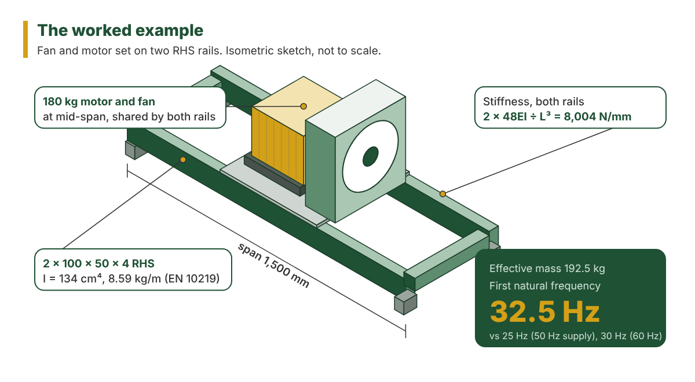
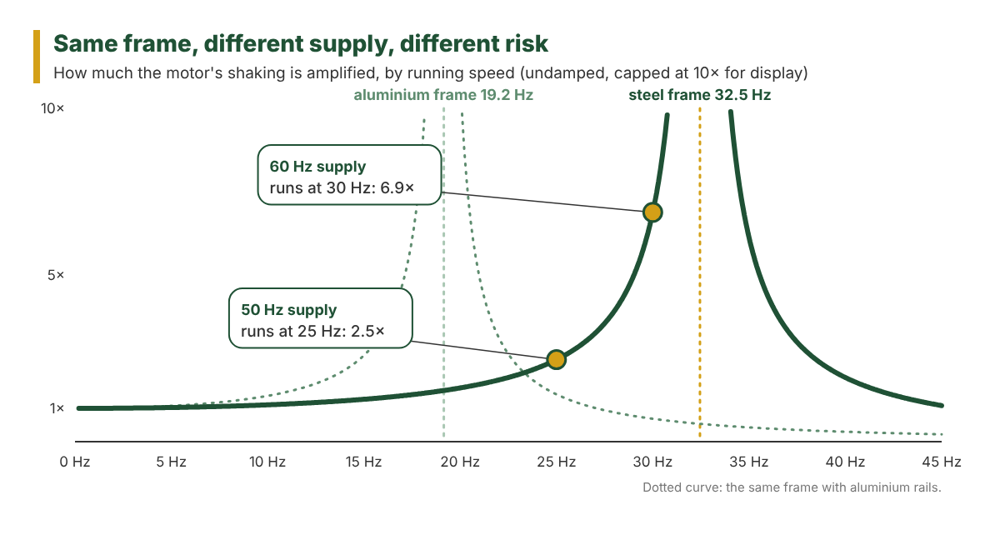

Picture a fan and motor set on two steel rails that runs quietly in the UK. Ship the same design, on the same drawing at the same revision, to a site in the US, and it can come back with a vibration complaint. Nothing about the frame would have changed. The supply would. A four-pole induction motor has a synchronous speed of 1,500 rpm on 50 Hz and 1,800 rpm on 60 Hz, and runs a little below that because of slip. So the frame is now being shaken about 29 times a second instead of 24, and a simple bending model of it puts its first mode near 32.5 Hz.
That is a hypothetical worked example, not a real case, and every number in it is calculated below. It is also the kind of product development risk that simulation analysis is good at catching, because it sits in the operating conditions, which the CAD model doesn't record. A static or fatigue check asks whether a part will survive its load. This article is about a different question: whether the product will still behave when the conditions around it change.
Why this matters for manufacturers. A vibration problem found after the prototype means redesign, new parts and a delayed test. Found after shipping, it becomes a warranty claim, often on a variant nobody prototyped because only the market or a bought-in part changed. Checking those variants on paper first is cheap. Rebuilding them later is not.
The Drawing Didn't Change, the Product Did
Release control tracks drawing revisions. A change to the geometry gets a new revision letter, a check and a signature. A change to how the product is used often gets none of that, because there is nothing to redraw.
Selling into a 60 Hz market is the obvious one. A variable frequency drive added for energy saving or process control is another, and it turns the motor's one speed into a range. Purchasing finds a cheaper motor from a different supplier with the same frame size and a different weight. A bearing type or housing changes, which alters how stiffly the shaft is held and what the rotating assembly passes into the frame. The machine that sat on a ground-floor slab gets installed on a steel mezzanine, or on anti-vibration mounts somebody picked from a catalogue. An acoustic hood or a guard is bolted on top, adding mass well above the rails.
None of these touches the frame drawing, and every one of them can change the frequency the frame is excited at, the frequency it responds at, or both. Our position is that validation should be triggered by a change in operating conditions as well as by a CAD revision. In practice it usually isn't, and the first anyone hears of it is a field report.
The Frame Is a Spring With a Motor on It
Before any equations, the physical picture. Put a mass on a spring, push it and let go, and it bounces at one particular rate: its natural frequency. A stiffer spring raises it and a heavier mass lowers it. On a motor base the rails are the spring and the motor and fan are most of the mass. If the motor shakes the frame at or near that frequency, small forces produce large movements. That is resonance.
So the first check has three steps: how stiff the rails are under the motor, how much mass is moving, and what frequency those two give.
The example frame is two 100 × 50 × 4 mm cold-formed RHS rails, standing on their 100 mm face, spanning 1,500 mm between supports, with a 180 kg motor and fan set at mid-span shared equally between them. The section properties come from the EN 10219 tables: second moment of area 134 cm⁴, mass 8.59 kg/m. Steel's elastic modulus is 210,000 MPa (EN 1993-1-1).
| Step | Working | Result |
|---|---|---|
| Stiffness of one rail at mid-span | 48*EI* ÷ *L*³ = 48 × 210,000 × 1,340,000 ÷ 1,500³ | 4,002 N/mm |
| Stiffness of both rails | 2 × 4,002 | 8,004 N/mm |
| Mass of the rails | 2 × 1.5 m × 8.59 kg/m | 25.8 kg |
| Effective moving mass | 180 + (17/35 × 25.8) | 192.5 kg |
| First bending frequency | (1 ÷ 2π) × √(8.004 × 10⁶ N/m ÷ 192.5 kg) | 32.5 Hz |
The 17/35 comes from Rayleigh's method. A simply supported rail doesn't move uniformly: the middle travels with the motor and the ends stay put, so only about half its mass counts.

Be clear about what this number is. It is the first bending frequency of a two-beam model with rigid supports and the motor as a point mass. The real frame will also have torsional and rocking modes, and its mounts and floor will usually pull the bending frequency down. It is still worth ten minutes in a spreadsheet before anything goes near FEA, because it tells you whether there is a problem worth modelling.
The Same Frame at 50 Hz and at 60 Hz
The UK, the rest of Europe, India and Australia run their mains at 50 Hz. The US and Canada run at 60 Hz. A published datasheet for a 5.5 kW four-pole motor in a 132 frame gives its full-load speed as 1,447 rpm at 50 Hz and 1,765 rpm at 60 Hz. Those are the speeds used below: 24.1 Hz and 29.4 Hz.
What matters is how close the running speed sits to the natural frequency. The dynamic magnification factor shows how much larger the vibration is than the same force would produce if applied slowly. For an undamped single spring and mass it is 1 ÷ |1 − *r*²|, where *r* is running frequency over natural frequency.
| Supply | Running speed | *r* = running ÷ 32.5 Hz | Magnification (undamped model) |
|---|---|---|---|
| 50 Hz | 1,447 rpm = 24.1 Hz | 0.74 | 2.2 |
| 60 Hz | 1,765 rpm = 29.4 Hz | 0.91 | 5.6 |
These are theoretical factors, used to show how sensitive the frame is to speed. They are not a prediction of measured vibration, which also depends on damping, joints, mounts and what the excitation actually looks like. But the direction is clear. Same frame, same drawing, same material, and a change in supply has moved the running speed most of the way to resonance.
The force goes up too. A rotor's residual out-of-balance force rises with the square of speed, so the same rotor pushes (29.4 ÷ 24.1)² = 1.49 times harder at 60 Hz. Combined, the simplified model predicts nearly four times the response on 60 Hz supply (5.6 × 1.49 ÷ 2.2 = 3.7).
On the shop floor that shows up as noise, fasteners working loose, a fan that won't stay in balance and bearings that wear early. It doesn't need a broken weld to become a warranty claim.
Damping lowers the peak, and how much depends on the build. A welded steel frame has limited damping of its own, while bolted joints and resilient mounts can add a good deal. Because it is hard to predict before the frame exists, we don't rely on it when deciding where the first mode should sit. We want the first mode clear of every speed the product will run at, in every market it will be sold into.

A VFD turns one speed into a range
Fit a variable frequency drive and the motor no longer runs at one speed. It ramps from zero to the setpoint on every start, and process control may hold it anywhere in its range. A frame whose first mode sits just above full speed now has the drive sweeping up towards it every time.
There are two ways out. Stiffen the frame until the first mode is above the top of the speed range, or programme a skip frequency band into the drive so it never dwells near the frame's frequency. The second is cheaper, but it only works if it survives commissioning, so it belongs on the commissioning sheet and in the manual as well as in the analysis report.
The aluminium version
Now someone proposes aluminium rails to save weight, same section, same span. Aluminium's modulus is 70,000 MPa (EN 1999-1-1), a third of steel's, so the rail stiffness drops to a third, 2,668 N/mm for the pair. The rails get lighter, but they were never the heavy part. The motor and fan still weigh 180 kg.
The model's first bending frequency falls to 19.2 Hz, below the running speed in both markets. Running above resonance is not a problem in itself. Getting there is: every start and stop takes the motor through 19.2 Hz, and with a slow drive ramp it spends time there. That can lead to hard shaking at each start and stop and, depending on stress levels and duty, loosening fasteners and cracking at brackets and welds.
A like-for-like swap is the worst case, and that is the point of showing it. In practice an aluminium frame would be resized with deeper sections, thicker walls or extra stiffeners, because for vibration it is stiffness, not strength, that usually governs. The model tells you how much deeper before anyone cuts metal.
Why Prototype Testing Alone Can Be Too Late
A prototype will find a frequency problem. The question is what it costs to find it there. By the time a frame is on a test bed, the rails have been cut, the motor bought, the guard folded and the brackets welded. A problem found then means redesign, new parts, perhaps a different motor or drive, and a delay to everything that was waiting on the test. If the 60 Hz variant was never prototyped, because the only change was the market, the first test is the customer's installation.
This is where simulation analysis pays for itself. The 50 Hz and 60 Hz cases, the VFD range and the aluminium option can be checked against each other while each of them is still a line in a spreadsheet or a property in CAD, and the prototype gets built to the one that passed.
Where the Hand Calculation Stops and FEA Starts
The beam calculation finds the one mode it was set up to find: the rails bouncing up and down together. Hand calculations are good at showing the obvious risk quickly. FEA shows the behaviour a simplified model can't.
A real base frame has cross-members that let it twist, so there is a torsional mode with one rail going up while the other goes down. The motor sits on four feet above the rails, so there is a rocking mode where it tips about its shaft axis, and that can sit below the bounce mode. The frame stands on levelling feet or anti-vibration mounts, which are springs in their own right, on a floor that may have frequencies of its own.
A modal analysis in FEA gives the frame's first several mode shapes and frequencies with the motor feet, mounts and cross-members modelled as they are. The mode shapes also show which modes the motor can actually drive. A torsional mode near running speed matters if the out-of-balance force pushes on it. A local panel mode in the guard at the same frequency may not.
What the Model Doesn't Predict on Its Own
A modal model gives frequencies and shapes. It does not know how hard the frame will be pushed, and several of the inputs that decide that are uncertain before the product exists.
The out-of-balance force depends on the balance grade the rotor and fan are actually built to, which is an input someone has to choose, usually from ISO 21940-11, not something the model works out. A motor also produces magnetic forces at twice line frequency, 100 Hz on 50 Hz supply and 120 Hz on 60 Hz, which can excite higher modes the running-speed check never looks at. Bearing defects produce frequencies of their own as they wear. Mount and floor stiffness are often guesses until the machine is installed, and real frames differ from the model through weld size, fit-up and bolt tension.
None of that makes the model less useful. It means the analysis report should say which of these were assumed and by how much, so the test can check them.
Use Simulation to Decide What the Prototype Has to Prove
Simulation does not replace physical testing. It tells you what the test has to look for.
Good FEA engineering tells you before the first frame is built which frequency ranges matter, which mode shapes to look for, where on the frame they move most, and so where to put the accelerometer and which failure modes to watch. A tap test on the first frame built, striking it with an instrumented hammer and reading the response, then confirms whether the model's first frequency is real. That one measurement is worth more than a finer mesh.
If the test and the model disagree, fix the model before trusting anything else in it. The usual culprit is the supports: the mounts or the floor are softer than assumed, or a bolted joint is not as rigid as a merged mesh made it. Once the model's first frequency matches the frame, it can be used with some confidence for the variants nobody will prototype, such as the 60 Hz export build or the next motor substitution.
Before the Next Market or Material Change
Keep the frequency calculation with the drawing, and write next to it the supply frequency, the speed range, the motor mass, the mounts and the material it was done for. When any of those changes, re-run it before the change ships, even if the drawing stays at the same revision.
The prototype is still the final check. The point of doing the analysis first is that the frame you build to test has already been checked against everything you could have calculated, so the test is confirming a model rather than finding a problem.
The frame, motor and figures in this article are an illustrative example. They show the method, not design values for any particular machine, which needs its own analysis.